01 / SELECTED WORK
浮光樂影・浮空投影音樂盒
產品驗證中
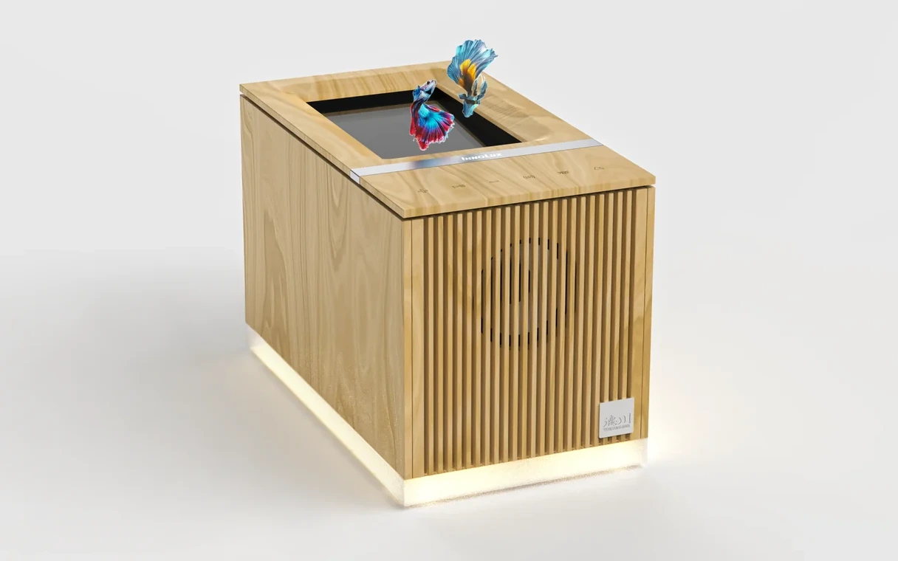
浮光樂影將音樂與浮空影像收進木質箱體，探索居家擺件與互動裝置之間的可能。頂部整合浮空投影視窗與觸控操作，搭配六種顯示情境，讓聆聽音樂之外，也多了一份可觀看、可操作的樂趣。目前正進行產品驗證，持續調整外觀、機構與使用體驗。
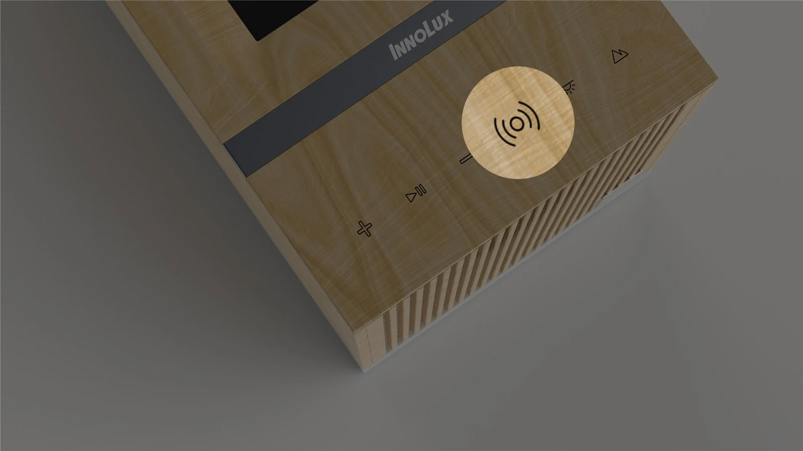
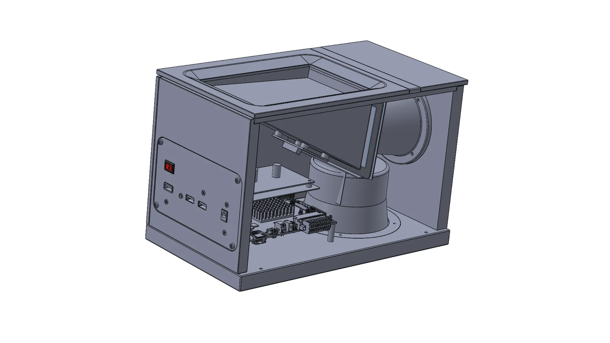
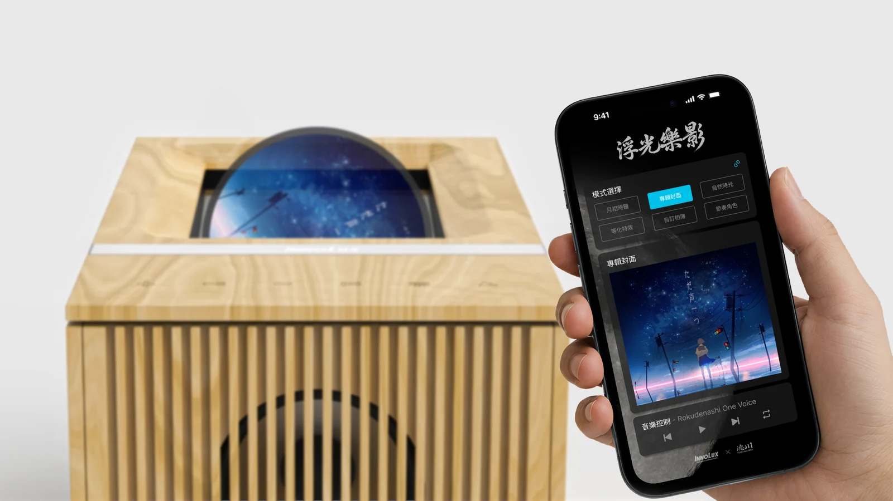
YU-FENG HUANG / PORTFOLIO
探索產品的樣貌，
也讓想法成為實際的體驗。
01 / SELECTED WORK
產品驗證中

浮光樂影將音樂與浮空影像收進木質箱體，探索居家擺件與互動裝置之間的可能。頂部整合浮空投影視窗與觸控操作，搭配六種顯示情境，讓聆聽音樂之外，也多了一份可觀看、可操作的樂趣。目前正進行產品驗證，持續調整外觀、機構與使用體驗。



02 / SELECTED WORK
台灣・法國展出
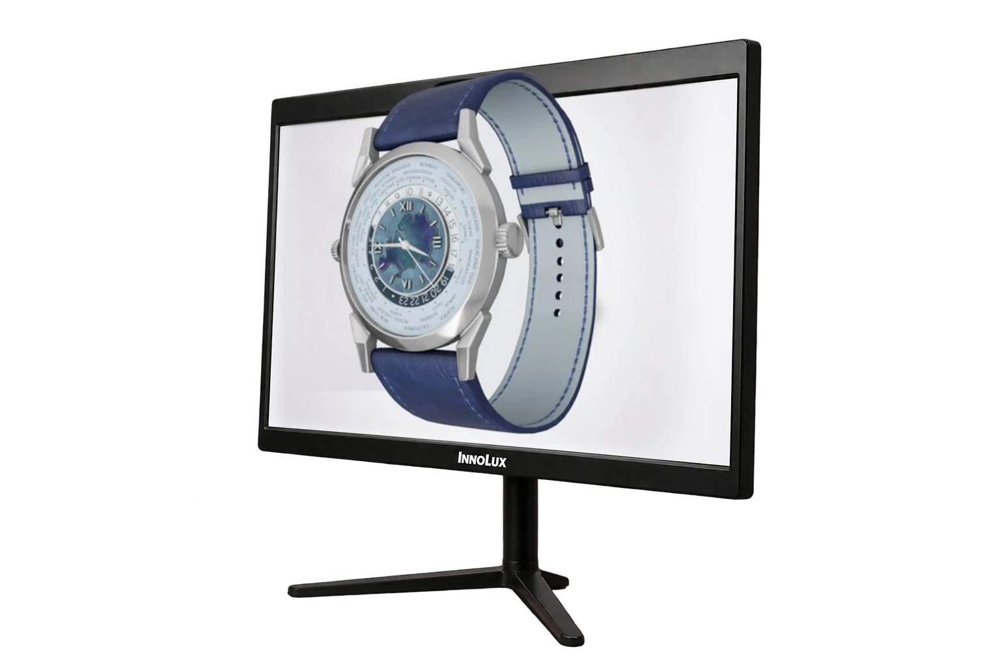
不需配戴眼鏡，觀眾便能從不同位置觀看立體影像，並透過手機選擇模型、調整外觀，主動探索展示內容。設計串連顯示端、手機操作與模型管理介面，讓內容準備與現場互動形成完整流程。作品曾於台灣與法國展出，將裸視 3D 帶入可參與的展示體驗。
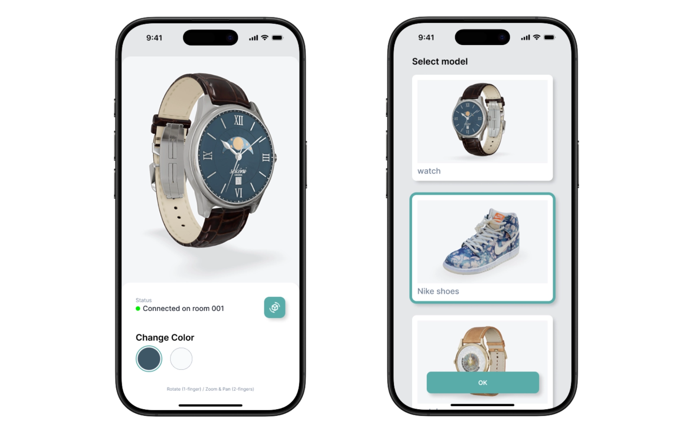
03 / SELECTED WORK
量產銷售
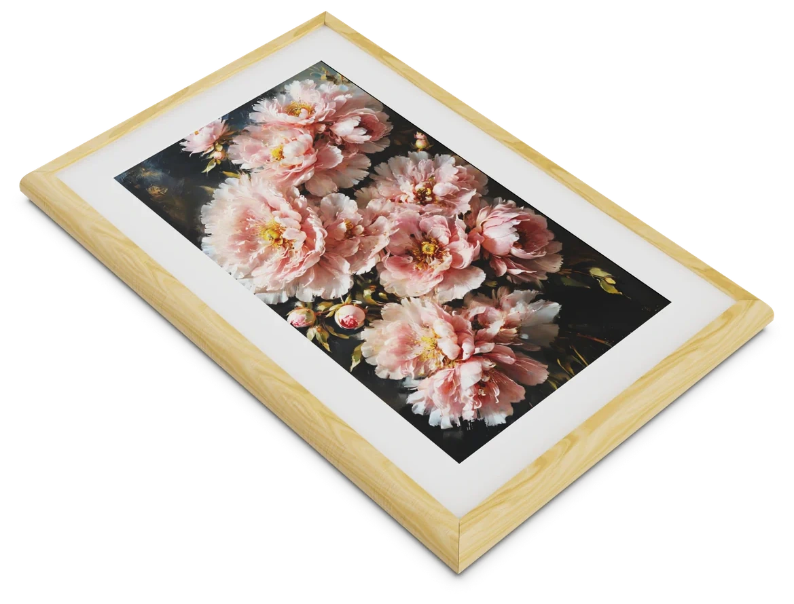
以類紙質感的顯示效果，讓數位畫作自然融入居家與展示空間，並隨環境光調整畫面色溫。這一代從原本的離線畫框延伸至連網內容管理，透過手機完成連網設定，再由後台更新展示內容。保留畫框的觀看感受，同時讓日常換圖與內容維護更方便，產品已量產銷售。
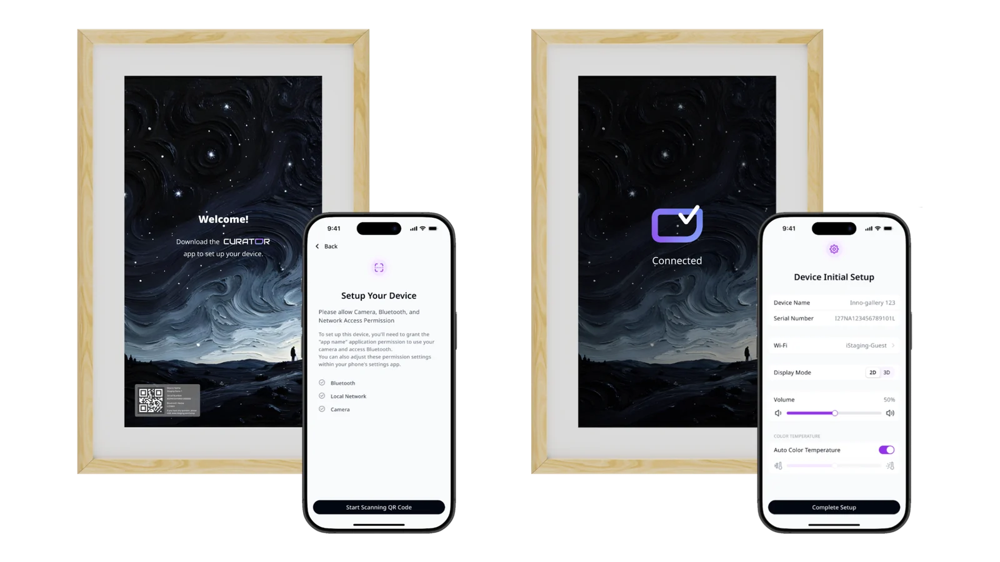
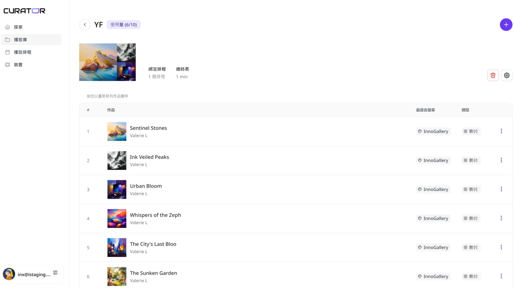
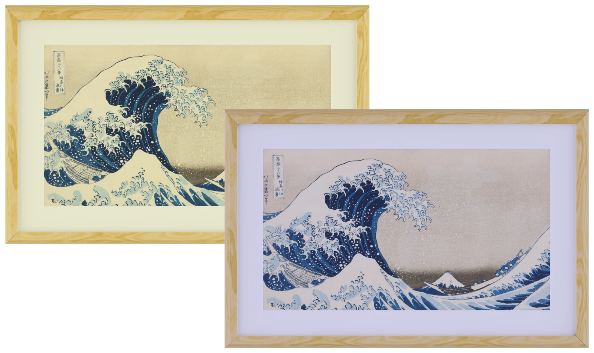
MORE SELECTED WORK
EDGE AI / AUTOMOTIVE DISPLAY
針對卡車駕駛需要掌握車側與後方動態的情境，整合即時影像、AI 物件辨識與盲區提示。畫面呈現不同視角，標示行人與車輛等目標，並以燈光提醒需要留意的周邊動態，協助駕駛判讀資訊。
觀看實機 Demo ↗LOW-POWER DISPLAY / PRODUCT DESIGN
為餐飲與桌面展示設計，讓菜單、活動與提醒資訊能透過手機換圖，減少反覆抽換紙卡的工作。彩色電子紙在斷電後仍可保留畫面，搭配內建電池，方便彈性擺放；背面的木桿支架支援直、橫向使用，適應不同版面的展示需求。
觀看實機 Demo ↗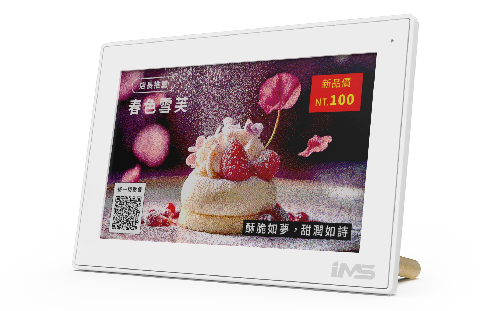
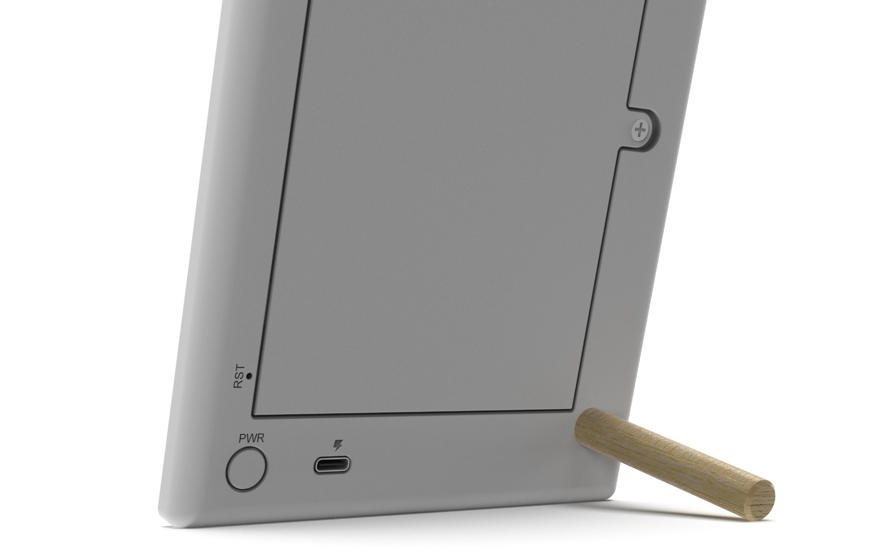
DIGITAL WRITING / PRODUCT DESIGN
以一條 USB-C 線連接電腦，將文件顯示與筆觸輸入整合在同一裝置，讓紙本簽署轉為數位操作。輕薄機身搭配折疊支架，兼顧桌面使用與收納；磁吸筆座則將定位、收納與充電集中在一起，讓筆有固定的放置位置。
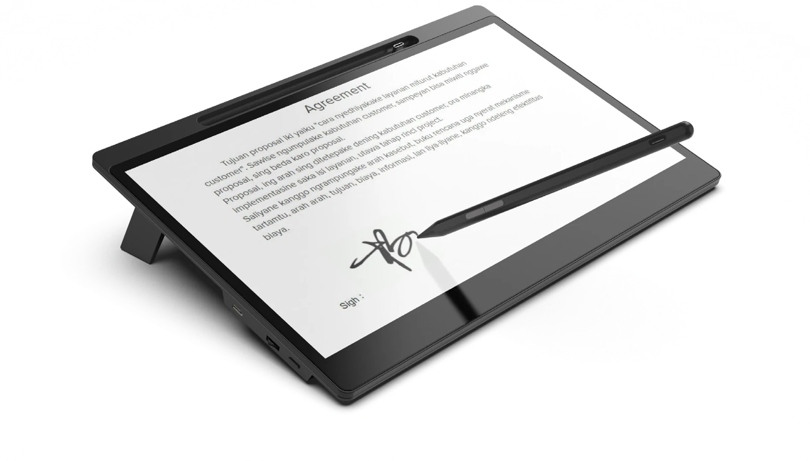
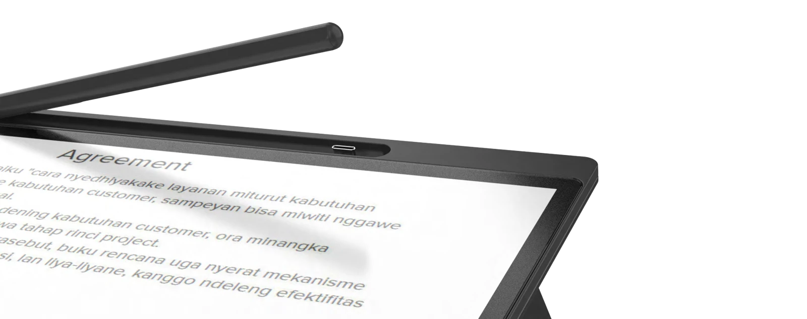
ABOUT
從工業設計出發，持續探索顯示、互動與智慧產品。這裡的作品多由我整合完成，涵蓋產品設計、互動介面與軟硬體開發，讓想法成為可以感受、可以使用的物件。
RECOGNITION